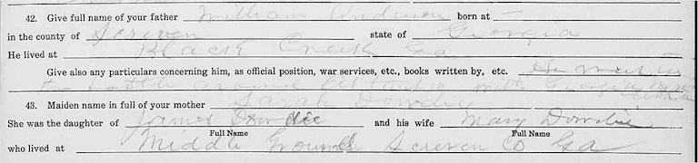
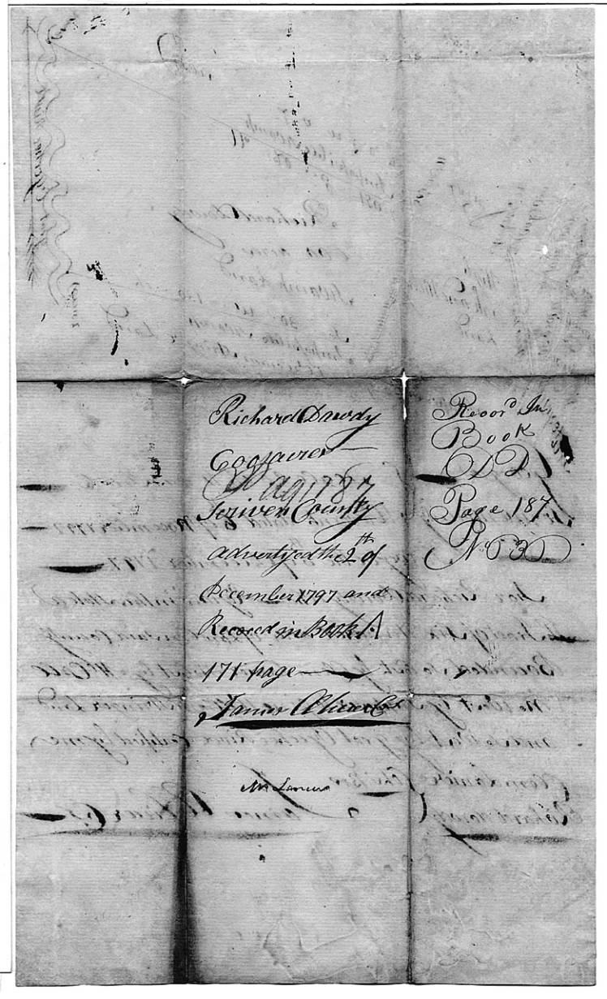
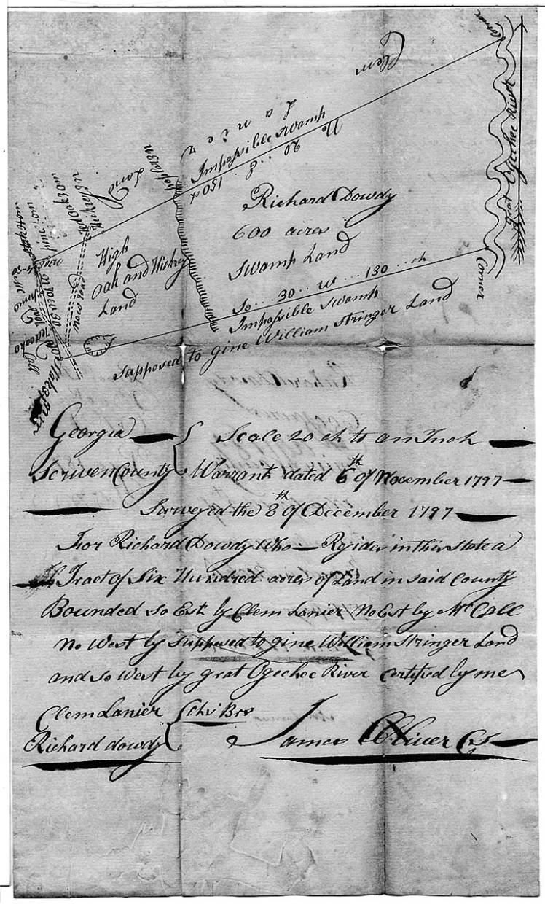

Georgia GeorgiaScreven County |
1800s 1800 July 10 Screven Co GA DB A pg 226 Indenture between Richard Dowdy of Screven Co planter of 1st part and Clement Lanier of Screven Co, planter of 2nd part; $113; Conveyed to Clement Lanier land containing 200 ac originally granted to Charles McCall Sen'r on 24 Dec 1784 [land description] <mark with bold R> Richard Dowdy Wit Jas Carwell (he appears to be the clerk); Recorded in Blks Office of Superior Court of Screven Co in Book B folios 24 and 25 this 17 July 1800 1808 October 8 - Augusta Chronicle pg 3 - Georgia Scriven County - Whereas Richard Dowdy hath applied to me for letters of administration of the estate and effects of John Brice deceased. These are therefore to cite and adminish all and singular the kindred and executors of said deceased to be and appear before the honorable court of Ordinary within the time prescribed by law at Scriven courthouse to show cause (if any they can) why said letters should not be granted Given under my hand and seal at office the 1st day of October 1808 - Timothy McKinney D cl'k 1808 Oct 14 - "Columbia Museum and Savannah Advertiser" newspaper A Caution - All persons are hereby forewarned against dealing or trading on my account with my wife Penelope, as I am determined not to pay any of her contracts, for and on account of her absenting herself from my house and residence. Given under my hand, the 26th day of September 1808, Richard Dowdy, Scriven County. 1810s 1817 July 1 Screven Co DB K pg 271 (page is wrong in main index) Richard Dowdy and wife Penelope of Scriven Co to John Pearson of Chatham Co GA; $3,000, tract of land lying on Great Ogechey River originally granted to John Adams Trustlan and from John Adam Trustlan to James O'bray and then by a legal Will unto Henry O'bray (at the time of survey vacant on all sides) 600 acres and from Henry O'bray to Bradly Hale from Bradly Hale to James Archer and from James Archer to Richard Dowdy, also one other tract of pine land originally granted to Joseph Cason and adj A Fryer, David McCall, Harris and Bradly Hale and from Joseph Cason to Clement Lanier and from Clement Lanier to Richard Dowdy containing in the whole 1,040 acres. <mark with bold R> Ricahrd Dowdy, <mark> Penelope C. Dowdy. Wit: Thoams Stewart, Wyly Dowdy, Will'm Lee JP. Penelope Dowdy wife of Richard Dowdy was examined and relinquised dower 1 July 1817 <mark> Penelope C. Dowdy; Recorded 29 March 1821 1817 April 12 - Augusta Chronicle pg 4 - Sheriff's Sale - on the first Tuesday in May next, at the courthouse in Jacksonborough, Scriven county - ALSO - 200 acres of land lying and being in Scriven county, taken as the property of Paul Marlow, to satisfy an execution in favour of Richard Dowdy - Solomon Kemp S.S. C. March 20 Screven Co GA Militia List - Wiley Dowdy Leiut - Sept 3 1817 - Jan 29 1819 1820s 1820 Screven Co GA Census
1820 June 3 - Augusta Chronicle pg 3 - Sheriff's Sale. Will be sold on the 1st Tuesday in July next at the courthouse in the town of Jacksonborough Scrivin county - 1040 acres of land lying on the waters of the Big and Little Ogeche in the county of Scriven, being the plantation lately conveyed from Richard Dowdy to John Pearson, sold as the property of John Pearson by virtue of a rule absolute on the foreclosure of a mortgage by the said Pearson to Richard Dowdy - Solomon Kemp S.S.C. Scriven county June 3 1820 1820 December 5 - Screven Co GA DB L pg 14 Bill of Sale - John Pearson of Screven Co GA to Richard Dowdy of Screven Co GA; $1,200 sold to Richard Dowdy the following property: one negro man named Harry, one negro man named Pipes <s> Jno Pearon. Wit: Seaborn Goodall, M N McCall JP. Recorded 22 February 1823 1821 Georgia Land Lottery - fortunate Drawers
Sept 14 1822 Richard Dowdy married Nancy Moultrie (License) 1824 March 6 - Augusta Chronicle pg 3 - 600 acres of land lying in the county of Scriven adj the waters of Big Ogechee land of Granvill Beville and others levied on as the property of John Person to satisfy an execution in favor of Richard Dowdy, the same being the plantation whereon the said John Pearson now resides, levied and returned to me by Willis Taylor, Dept Sheriff. Solomon Kemp Sen. S.S.C. March 6 Screven Co GA Militia List -John Dowdy Leiut - Aug 23 1824 -June 20 1829 Jan 4 1826 John Dowdy married Gordian Anderson 1826 Feb 10- Will of Hez Anderson: ...witnessed by John L. Dowdy 1826 March 20 Screven Co DB L pg 196 (skipped in general index) - Richard Dowdy to Wilson Connor bill of sale, $450; slave named Harry. <mark with bold R> Richard Dowdy. Wit: A B Strickland (2nd husband of son's widow Rebecca), L M Strickland JP Recorded 8 March 1827 1826 Chatham Co GA Tax List
1830s 1830 Screven Co GA Census
1833 April 1 Screven Co GA Marriages - Ann Dowdy married Littleton Ivy 1833 June 16 Screven Co GA Marriages - Sarah Ann Dowdy married William Anderson
 8 Jul 1833 Screven Co GA Ordinary Minutes (C-73) Partitioners appointed to divide estate of Hezekiah Anderson amoung the following heirs: Alley Anderson, James Lee, Sion L. Boykin, John L. Dowdy, William Anderson, Ignatius B. Anderson, Jane J. Anderson, Adelia F. Anderson, Hezekiah A. Anderson and Caroline M. Anderson. 1836 September 15 Screven Co GA Marriages - Ann Dowdy married Lewis M. Strickland 1838 Georgia Cherokee Land Lottery: Lot #209 22nd District, 2nd Section. - Mary Dowdy; Resident of 36th District, Scriven Co; widow.
1840s 1840 August 3 Pike Co GA DB F pg 209 - Tattnall County; Indenture between Benjamin F Dowdy of sd county of 1st part and John Davis of Pike Co of 2nd part $700; Benjamin F Dowdy conveyed to John Davis a tract of land lying in teh 2nd District of originally Monroe now Pike Co, Lot 105, containing 202 1/2 ac etc etc <s> Benjamin F Dowdy Wit: S P Smith, James Williams. Recorded 20 August 1840 1842 September 11 Screven Co GA Marriages - Kisiah Dowdy married George W Scott 1850 Screven Co GA Census
Screven Co GA Origins TN Civil War Veteran Questionaires - John Moultrie Anderson CSA of Bedford TN - ...mother: Sarah Dowdie, daughter of James and Mary Dowdy who lived at Middle Ground, Screven Co GA Deeds Deed index searched through 1886 Screven Court of Ordinary Book 1 1811-1829 (LDS digital book) no Dowdys mentioned Screven Superior Court - Minutes and Writs 1816-1822 - pg 40, 41, 81, 82, 83, 136-137, 355, 508-511, 524 (all Richard Dowdy deft or plt) 1822-1828 - no Dowdys deft or plt Screven Superior Court - Minutes and Writs 1826-1840 - pg 261 - Hiram Roberts vs John L Dowdy exor etc case confess' - John L Dowdy agreed to judgement of $40 to Hiram Roberts in his role of exor of estate of Richard Dowdy dec'd 19 October 1835.
  |